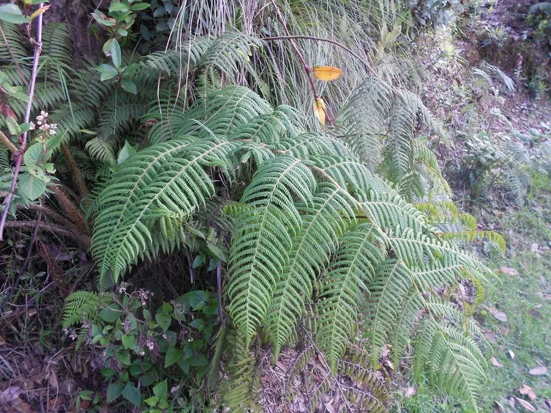

蕨类与裸子植物 · 植物界
大叶黑桫椤 Alsophila gigantea

桫椤科桫椤属大型树蕨，主干粗壮、叶柄乌黑，二回羽状叶巨大，生于华南与云南的热带山地雨林，是国家二级保护植物。
- 分类
- 门蕨类植物门纲木贼纲目桫椤目科桫椤科属桫椤属
- 栖息环境
- 海拔 500–1200 米的热带山地雨林沟谷与林下阴湿处，喜散射光
- 地理分布
- 中国云南、广西、广东、海南及东南亚热带地区
- 保护级别
- 中国国家二级保护野生植物；生境破坏与采挖使野生种群稀少
物种志
大叶黑桫椤为大型树形蕨类，主干直立，高 2–5 米，直径 10–20 厘米，表面密布老叶柄脱落后留下的疤痕。叶簇生于主干顶端，二回羽状，长 2–3 米，叶柄与叶轴乌黑发亮，基部密被深色鳞片，幼叶拳卷。孢子囊群圆形，生于小脉分叉处，成熟时褐色，无囊群盖。
本种分布于中国云南、广西、广东、海南及东南亚的热带山地雨林，生于海拔 500–1200 米的沟谷与林下阴湿处，喜温暖湿润、散射光充足的环境。它是桫椤科中体型较大的种类，主干粗壮、叶形巨大，是热带雨林中的标志性植物。由于生境破坏与人为采挖，野生种群稀少，桫椤科所有种均被列为国家二级保护野生植物。它以孢子繁殖，自然更新十分缓慢。
形态与习性
- 株高主干高 2–5 米，直径 10–20 厘米
- 叶二回羽状，长 2–3 米，叶柄乌黑
- 孢子孢子囊群圆形，生于小脉分叉处
- 光照喜散射光，忌强光直射
- 水分喜高湿，需充足空气湿度
- 土壤疏松肥沃、排水良好的酸性壤土
- 主要用途园林观赏、蕨类演化研究与种质保护
趣味知识
- 大叶黑桫椤的叶柄乌黑发亮，与绿色的叶片形成鲜明对比。
- 它的主干表面布满老叶柄留下的疤痕，可以据此粗略判断株龄。
- 桫椤科植物在恐龙时代就已繁盛，被称为蕨类中的“活化石”。
- 它的孢子囊群没有囊群盖，这是桫椤属与许多蕨类不同的特征。